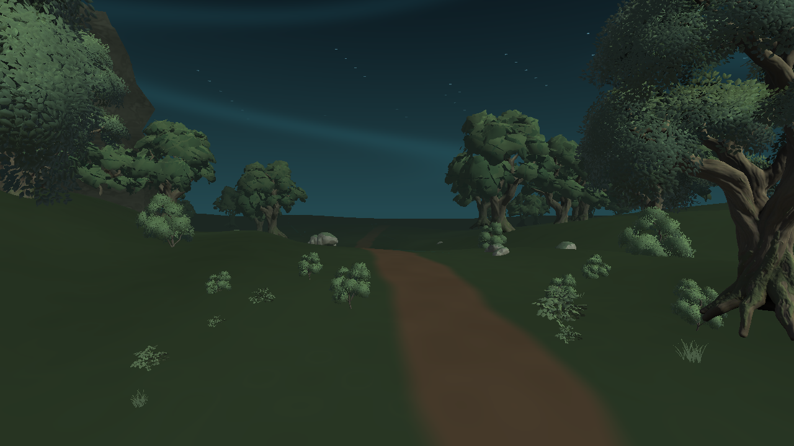
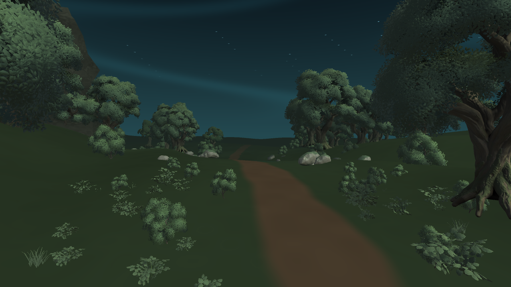

Lumen Swarm / 森林画質比較
WebGL版をプレイする同じ無料の森林素材と地形を使用。樹木密度・LOD・影・テクスチャ品質だけを切り替えています。


Unity Editorの同位置静止画。実際のWISP操作やFPSは上のWebGL版で確認できます。現在は森林エリアの制作試作で、本番完成版ではありません。
同じ無料の森林素材と地形を使用。樹木密度・LOD・影・テクスチャ品質だけを切り替えています。


Unity Editorの同位置静止画。実際のWISP操作やFPSは上のWebGL版で確認できます。現在は森林エリアの制作試作で、本番完成版ではありません。